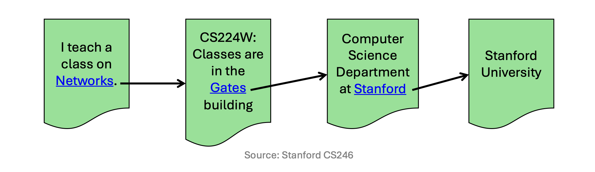
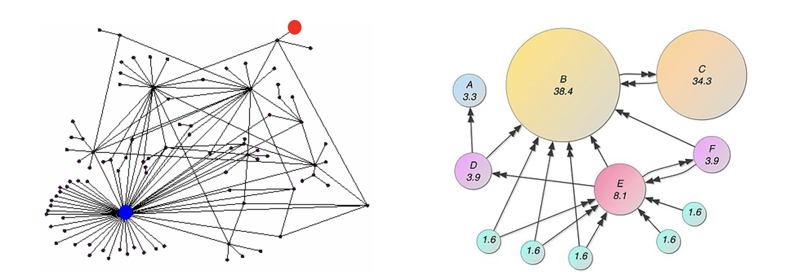
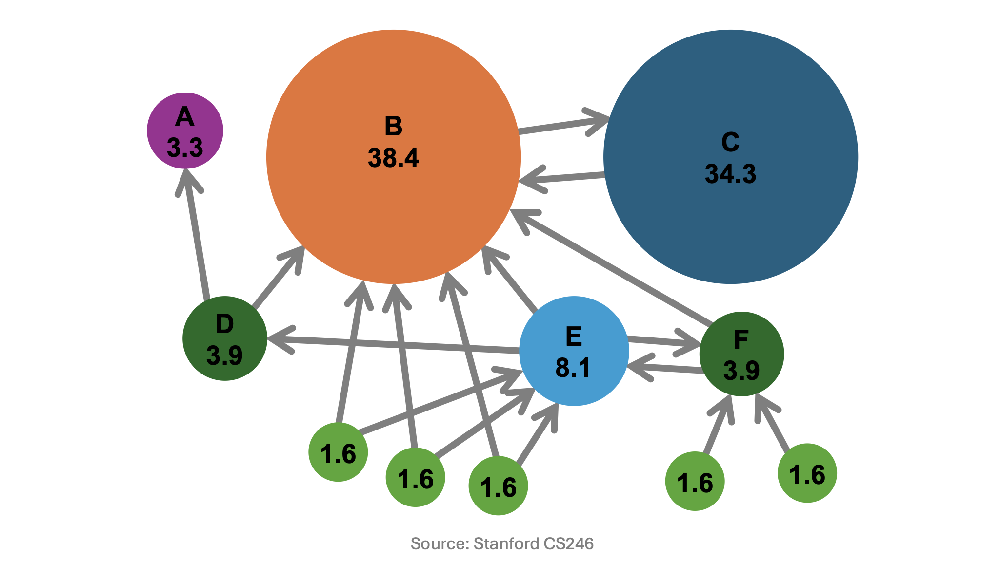
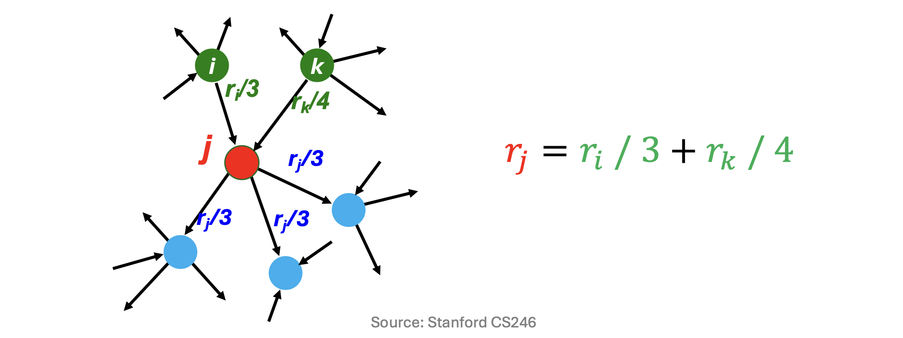
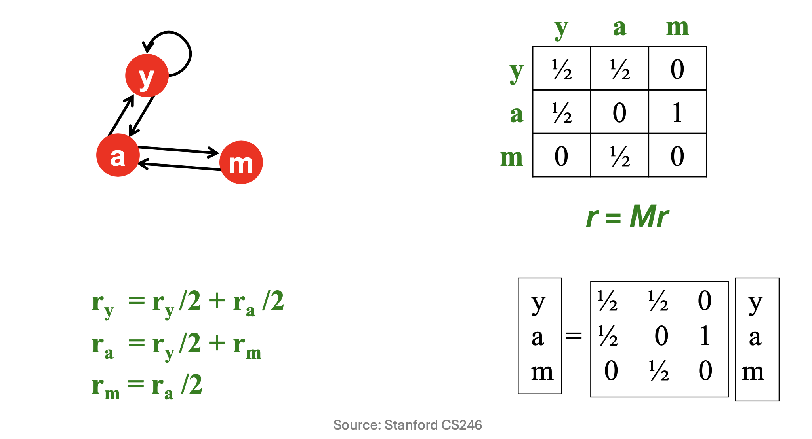
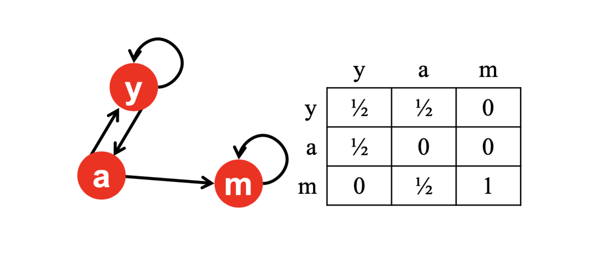
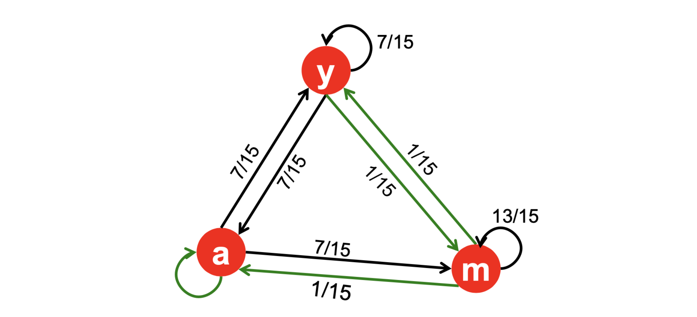
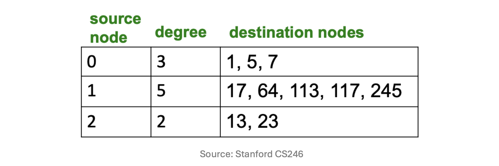
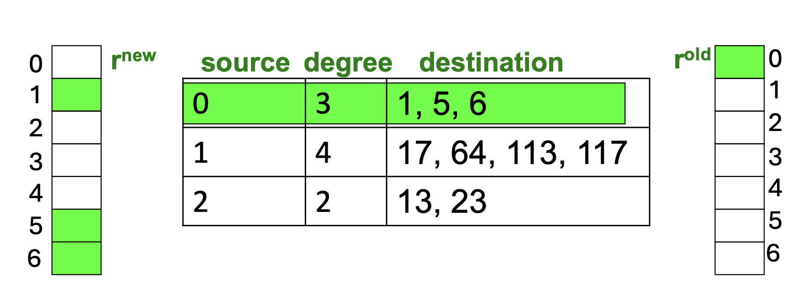

들어가며
지난 강의까지는 UV 분해(UV Decomposition) 기반의 추천 시스템 — UV 분해의 ML적 해석, 다양한 변형, 암묵적 피드백 처리 — 을 살펴보았습니다. 이번 강의부터는 링크 분석(Link Analysis) 이라는 새로운 주제로 전환합니다. 링크 분석은 데이터를 그래프(Graph) 로 표현하고, 그 연결 구조를 통해 새로운 정보를 추출하는 분야입니다.
이번 포스트의 핵심 주제는 PageRank 알고리즘입니다. 1998년 Google이 도입하여 세계 최고의 검색 엔진을 탄생시킨 이 알고리즘을 아이디어, 수학적 정식화, 수렴 이론, 실용적 구현까지 처음부터 끝까지 체계적으로 정리해 보겠습니다.
1. 웹 검색과 그래프 (Web Search as a Graph)
웹 검색의 목표와 구조
웹 검색의 근본적인 목표는 사용자의 질의(query)에 가장 관련성 높은 웹 페이지를 찾아 반환하는 것입니다. 이를 위해 검색 엔진은 두 가지 핵심 작업을 수행합니다.
- 인덱싱(Indexing): 웹 전체를 크롤링하여, 어떤 단어(term)가 어떤 페이지에 등장하는지를 정리한 역 인덱스(Inverted Index) 를 구축합니다.
- 랭킹(Ranking): 질의와 관련된 페이지들을 추출한 뒤, 각 페이지의 권위(authority) 또는 신뢰도(trust) 에 따라 순위를 매겨 반환합니다.
이 두 작업을 수행하는 데는 두 가지 근본적인 어려움이 존재합니다.
- 웹 규모의 거대함(web-scale size): 전 세계 수십억 개의 웹 페이지를 실시간으로 빠르게 처리해야 합니다.
- 스팸 조작(spam manipulation): 검색 결과를 인위적으로 높이려는 악의적 시도를 방어해야 합니다.
역 인덱스 (Inverted Index)
역 인덱스는 웹 검색의 핵심 자료구조입니다.
- 각 단어(term)에 대해, 해당 단어를 포함하는 문서(페이지)의 목록(버킷)을 저장합니다.
- 사용자가 질의를 입력하면, 역 인덱스를 탐색하여 관련 단어를 포함하는 페이지들을 빠르게 추출합니다.
- 단어가 한 페이지에 자주 등장할수록, 그 페이지는 해당 단어에 더 관련성이 높다고 판단합니다.
예를 들어 “cat”이라는 단어가 포함된 문서들의 포인터가 “cat” 버킷에 저장되고, 사용자가 “cat”을 검색하면 해당 버킷에서 관련 문서를 즉시 조회할 수 있습니다.

역 인덱스의 한계: 스팸 조작
역 인덱스만으로는 검색 품질을 보장하기 어렵습니다. 비윤리적인 사람들이 검색 엔진을 손쉽게 속일 수 있기 때문입니다.
- 단어 반복 삽입: “cat”이라는 단어를 수천 번 페이지에 반복 삽입합니다.
- 숨기기 기법: 배경색과 동일한 색상의 텍스트로 단어를 숨겨 사람 눈에는 보이지 않지만 검색 엔진은 단어를 감지하게 만듭니다.
- 복사 스팸: 상위 노출된 페이지를 복사한 뒤 그 내용을 보이지 않게 붙여 넣습니다.
이런 방식으로 스패머들은 콘텐츠 품질과 무관하게 검색 순위를 높일 수 있었습니다. 이 문제를 근본적으로 해결하려면 단어 빈도를 넘어 페이지의 신뢰도 자체를 측정하는 새로운 접근이 필요합니다.

웹을 그래프로 모델링하기
그렇다면 어떻게 해야 페이지의 신뢰도를 제대로 평가할 수 있을까요?
핵심 아이디어: 웹을 방향 그래프(directed graph)로 표현하는 것입니다.
- 각 웹 페이지를 노드(node) 로 표현합니다.
- 페이지 \(i\)에서 페이지 \(j\)로의 하이퍼링크(hyperlink) 가 있으면 \(i \to j\) 방향의 엣지(edge) 를 생성합니다.
- 핵심 직관: 신뢰할 수 있는 페이지들은 서로를 가리키는 경향이 있습니다.
예를 들어, “Networks 강의 소개 페이지”가 “CS224W 강의 페이지”를 링크하고, 이 강의 페이지가 “Stanford CS 학과 페이지”를, 학과 페이지가 “Stanford University 공식 페이지”를 링크합니다. 이처럼 신뢰의 연쇄가 링크 구조에 자연스럽게 반영됩니다.

그래프의 정의와 표현
그래프 \(G = (V, E)\)는 \(n\)개의 노드(nodes) 와 \(m\)개의 엣지(edges) 로 구성됩니다.
- \(n \times n\) 크기의 희소 인접 행렬(sparse adjacency matrix) \(S\)로 표현합니다.
- 방향 그래프(directed graph): \(S\)는 비대칭(asymmetric) 행렬이며, 비영(non-zero) 원소의 수는 \(m\)개입니다.
- 무방향 그래프(undirected graph): \(S\)는 대칭(symmetric) 행렬이며, 비영 원소의 수는 \(2m\)개입니다.
\[S_{ij} = \begin{cases} 1 & \text{if } (i,j) \in E \\ 0 & \text{otherwise} \end{cases}\]
실제 웹 그래프처럼 노드 수 \(n\)이 수십억 개에 달하면, \(n^2\) 크기의 완전 행렬을 저장하는 것은 불가능합니다. 따라서 비영 원소만 저장하는 희소 표현(sparse representation) 이 반드시 필요합니다.

그래프 데이터의 실제 사례
그래프는 다양한 실세계 현상을 자연스럽게 모델링합니다.
소셜 네트워크(Social Networks): Facebook에서 각 사용자를 노드, 친구 관계를 엣지로 표현합니다. 전 세계 수십억 명의 연결 구조를 분석하여 커뮤니티 구조, 정보 전파 패턴 등을 파악할 수 있습니다.
통신 네트워크(Communication Networks): 인터넷에서 라우터와 도메인 간의 데이터 전송 경로를 그래프로 표현합니다. 각 도메인(domain1, domain2, domain3)과 라우터가 노드가 되고, 데이터 전송 경로가 엣지가 됩니다.
링크 분석의 활용 범위
링크 분석(Link Analysis) 은 데이터 마이닝의 인기 연구 분야로, 데이터 내의 연결 관계(connections/relationships)를 탐구합니다. 웹 검색 외에도 다양한 응용 분야가 있습니다.
- 소셜 네트워크 분석(Social network analysis): 커뮤니티 탐지, 영향력 최대화, 이상 탐지
- 추천 시스템(Recommender systems): 사용자-아이템 이분 그래프 기반 협업 필터링
- 교통 최적화(Transportation optimization): 도로망·항공망에서의 최단 경로 및 혼잡도 분석
- 생물정보학(Bioinformatics): 단백질 상호작용 네트워크(protein interaction networks) 분석을 통한 유전자 기능 예측
2. PageRank: 아이디어 (PageRank: Idea)
그래프에서 노드 순위 매기기
1998년, Google은 PageRank 알고리즘을 도입하여 링크 구조만으로 웹 페이지의 중요도를 측정하는 방식을 실현했습니다.
- PageRank는 Google을 세계 최고의 검색 엔진으로 만드는 데 핵심적인 역할을 했습니다.
- 그래프 마이닝 기법을 실제 웹 검색 문제에 성공적으로 적용한 대표적인 사례입니다.

직관 1 — 링크를 투표로 해석하기 (Links as Votes)
PageRank의 첫 번째 핵심 직관은 하이퍼링크를 “투표”로 간주하는 것입니다.
- 페이지로 들어오는 인링크(in-link)가 많을수록 더 중요한 페이지입니다.
- 예:
www.stanford.edu는 약 23,400개의 인링크를 가집니다. - 예:
www.joe-schmoe.com은 인링크가 겨우 1개입니다.
- 예:
- 그러나 모든 인링크가 동등하지 않습니다.
- 중요한(PageRank가 높은) 페이지에서 오는 링크는 더 많은 가중치를 가집니다.
- 따라서 PageRank는 재귀적(recursive) 으로 정의됩니다. 중요한 페이지가 링크를 보내면 그 링크를 받은 페이지도 중요해지는 방식이 수렴할 때까지 반복됩니다.
직관 2 — 랜덤 서핑 모델 (Random Surfing)
두 번째 직관은 랜덤 서퍼(random surfer) 모델입니다.
- 실제로 사람들이 많이 방문하는 페이지가 중요한 페이지입니다.
- 하지만 전 세계 모든 사용자의 웹 행동을 관찰하는 것은 불가능합니다.
- 랜덤 서퍼 모델 은 이에 대한 현실적인 대안입니다:
- 임의의 페이지에서 시작하여, 현재 페이지의 아웃링크(out-link) 중 하나를 무작위로 선택해 이동합니다.
- 이 과정을 무한히 반복합니다.
- PageRank는 랜덤 서퍼가 임의의 시점에 특정 페이지에 있을 확률(장기 방문 확률) 을 의미합니다.
두 직관의 동치성: 링크를 투표로 보는 관점과 랜덤 서핑 관점은 수학적으로 동치입니다. 둘 다 동일한 공식으로 귀결됩니다.
PageRank 점수 예시
아래는 실제 PageRank 점수의 예시입니다. 노드의 크기가 클수록 PageRank 점수(= 방문 확률)가 높습니다.
| 페이지 | PageRank 점수 |
|---|---|
| B | 38.4 |
| C | 34.3 |
| E | 8.1 |
| D | 3.9 |
| F | 3.9 |
| A | 3.3 |
| (기타) | 1.6 (각각) |
- B와 C가 가장 높은 점수를 가집니다. 이는 두 노드가 서로를 가리키는 강한 양방향 링크를 형성하고, 여러 소규모 노드들로부터 링크를 받기 때문입니다.
- 아웃링크만 있고 인링크가 없는 하단 소규모 노드들은 가장 낮은 점수(1.6)를 가집니다.

순환 정식화 (Recursive Formulation)
PageRank의 수학적 정식화를 유도해 보겠습니다.
핵심 원칙: - 각 링크의 “투표 가중치”는 소스 페이지의 중요도에 비례합니다. - 페이지 \(j\)가 중요도 \(r_j\)를 가지고 \(d_j\)개의 아웃링크를 가진다면, 각 링크는 \(r_j / d_j\)만큼의 투표 가중치 를 가집니다. - 페이지 \(i\)의 중요도 \(r_i\)는 모든 인링크의 투표 가중치의 합입니다:
\[\boxed{r_i = \sum_{j \to i} \frac{r_j}{d_j}}\]
예시: 노드 \(j\)가 3개의 아웃링크(중 하나가 \(i\)로 향함), 노드 \(k\)가 4개의 아웃링크(중 하나가 \(i\)로 향함)를 가질 때:
\[r_i = \frac{r_j}{3} + \frac{r_k}{4}\]

행렬 정식화 (Matrix Formulation)
순환 정식화 \(r_i = \sum_{j \to i} r_j / d_j\)는 행렬 방정식으로 간결하게 표현할 수 있습니다.
랭크 벡터 \(\mathbf{r}\)
- \(\mathbf{r} \in \mathbb{R}^n\)은 \(n\)개의 페이지에 대한 중요도 점수 벡터입니다.
- 정규화 조건: \(\sum_{i=1}^{n} r_i = 1\), \(r_i \geq 0\) for all \(i\) (확률 분포로 해석)
전이 행렬 \(M\)
\(n \times n\) 크기의 전이 행렬(transition matrix) \(M\)을 다음과 같이 정의합니다:
\[M_{ij} = \begin{cases} \frac{1}{d_j} & \text{if } j \to i \text{ (j가 i를 링크)} \\ 0 & \text{otherwise} \end{cases}\]
여기서 \(d_j\)는 노드 \(j\)의 아웃-차수(out-degree)입니다. 열 \(j\)는 “노드 \(j\)에서 출발한 확률이 어떻게 분배되는가”를 나타냅니다.
\(M\)은 열 확률 행렬(column-stochastic matrix) 입니다: 모든 원소가 음이 아니고, 각 열의 합이 정확히 1입니다.
\[\mathbf{r} = M\mathbf{r}\]
예시: y–a–m 그래프
다음 세 페이지로 구성된 그래프를 생각해 봅시다.
링크 구조: - \(y \to y\), \(y \to a\) (y의 아웃-차수 \(d_y = 2\)) - \(a \to y\), \(a \to m\) (a의 아웃-차수 \(d_a = 2\)) - \(m \to a\) (m의 아웃-차수 \(d_m = 1\))
전이 행렬 \(M\) (행 = 목적지, 열 = 출발지):
\[M = \begin{pmatrix} 1/2 & 1/2 & 0 \\ 1/2 & 0 & 1 \\ 0 & 1/2 & 0 \end{pmatrix} \quad \begin{array}{l} \leftarrow y \\ \leftarrow a \\ \leftarrow m \end{array}\]
PageRank 방정식 \(\mathbf{r} = M\mathbf{r}\):
\[r_y = \frac{r_y}{2} + \frac{r_a}{2}, \qquad r_a = \frac{r_y}{2} + r_m, \qquad r_m = \frac{r_a}{2}\]
이 연립방정식(+ 정규화 조건 \(r_y + r_a + r_m = 1\))을 풀면 PageRank 벡터 \(\mathbf{r}\)을 구할 수 있습니다.

문제 1: Dead Ends (막힌 노드)
이상적인 전이 행렬은 열 확률 행렬이어야 하지만, 실제 웹에는 아웃링크가 없는 페이지(dead end) 가 존재합니다.
문제의 발생: - Dead End 노드에 해당하는 열이 모두 0이 됩니다 → \(M\)이 열 확률 행렬이 아니게 됩니다. - 랜덤 서퍼가 Dead End에 도달하면 이동할 곳이 없습니다. - 중요도 누출(importance leakage): PageRank 점수의 합이 매 반복마다 줄어들다가 결국 0으로 수렴합니다.
예시: y–a–m 그래프에서 \(m\)이 Dead End라면 (아웃링크 없음):
\[M = \begin{pmatrix} 1/2 & 1/2 & 0 \\ 1/2 & 0 & 0 \\ 0 & 1/2 & 0 \end{pmatrix}\]
열 \(m\)의 합 \(= 0\) → 열 확률 행렬 조건 위반. 반복 계산 결과:
\[\mathbf{r}^{(0)} = \begin{pmatrix} 1/3 \\ 1/3 \\ 1/3 \end{pmatrix} \xrightarrow{\times M} \begin{pmatrix} 2/6 \\ 1/6 \\ 1/6 \end{pmatrix} \xrightarrow{\times M} \begin{pmatrix} 3/12 \\ 2/12 \\ 1/12 \end{pmatrix} \xrightarrow{\times M} \begin{pmatrix} 5/24 \\ 3/24 \\ 2/24 \end{pmatrix} \to \cdots \to \mathbf{0}\]
각 반복 후 합이 \(1 \to 2/3 \to 1/2 \to 5/12 \to \cdots \to 0\)으로 감소하는 것을 확인할 수 있습니다.

해결책: 항상 텔레포트 (Always Teleport)
Dead End 노드에서는 전체 \(N\)개 페이지 중 하나로 균등하게(확률 \(1/N\)) 텔레포트합니다.
- 구현: 전이 행렬에서 모든 원소가 0인 열(dead end 열)을 \(1/N\)으로 교체합니다.
위 예시에서 \(m\) 열을 \(1/3\)으로 채우면:
\[M' = \begin{pmatrix} 1/2 & 1/2 & 1/3 \\ 1/2 & 0 & 1/3 \\ 0 & 1/2 & 1/3 \end{pmatrix}\]
\(M'\)은 다시 열 확률 행렬이 됩니다.

문제 2: Spider Traps (스파이더 트랩)
두 번째 문제는 Spider Trap입니다. 모든 아웃링크가 그룹 내부로만 향하는 노드(들)의 집합입니다.
문제의 발생: - 랜덤 서퍼가 Spider Trap에 갇혀 빠져나오지 못합니다. - 시간이 지남에 따라 Spider Trap이 모든 PageRank 점수를 흡수합니다.
예시: y–a–m 그래프에서 \(m \to m\) 자기 루프가 추가된 경우 (\(m\)이 Spider Trap):
\[M = \begin{pmatrix} 1/2 & 1/2 & 0 \\ 1/2 & 0 & 0 \\ 0 & 1/2 & 1 \end{pmatrix}\]
반복 계산 결과 (합은 항상 1이지만 \(m\)에 집중):
\[\mathbf{r}^{(0)} = \begin{pmatrix} 1/3 \\ 1/3 \\ 1/3 \end{pmatrix} \xrightarrow{\times M} \begin{pmatrix} 2/6 \\ 1/6 \\ 3/6 \end{pmatrix} \xrightarrow{\times M} \begin{pmatrix} 3/12 \\ 2/12 \\ 7/12 \end{pmatrix} \xrightarrow{\times M} \begin{pmatrix} 5/24 \\ 3/24 \\ 16/24 \end{pmatrix} \to \cdots \to \begin{pmatrix} 0 \\ 0 \\ 1 \end{pmatrix}\]
결국 \(r_m = 1\), \(r_y = r_a = 0\)으로 수렴합니다.

해결책: 확률적 텔레포트 (Probabilistic Teleport)
Spider Trap 문제의 해결책은 랜덤 서퍼가 일정 확률로 임의의 페이지로 텔레포트하는 것입니다.
각 스텝에서 랜덤 서퍼는 두 가지 선택을 합니다: - 확률 \(\beta\): 현재 페이지의 아웃링크 중 하나를 무작위로 따라갑니다. (정상 탐색) - 확률 \(1 - \beta\): 웹 전체에서 임의의 페이지로 텔레포트합니다. (무작위 점프)
댐핑 계수(damping factor) \(\beta\)는 일반적으로 \(0.8 \sim 0.9\) 범위의 값을 사용합니다. 텔레포트 덕분에 Spider Trap에 갇힌 서퍼가 몇 스텝 이내에 탈출할 수 있게 됩니다.

Google의 통합 해결책
Google은 Dead Ends와 Spider Traps, 두 문제를 동시에 해결하는 Google’s PageRank 방정식을 제안했습니다.
\[\boxed{r_i = \sum_{j \to i} \beta \frac{r_j}{d_j} + (1-\beta) \frac{1}{N}}\]
- 첫 번째 항 \(\sum_{j \to i} \beta r_j / d_j\): 확률 \(\beta\)로 링크를 따라가는 정상 이동
- 두 번째 항 \((1-\beta)/N\): 확률 \(1-\beta\)로 전체 \(N\)개 페이지 중 하나로 균등 텔레포트
Dead End 처리: Dead End 노드의 경우 \(\sum_{j \to i}\) 항이 0이 되므로, 해당 열의 Always Teleport 처리가 암묵적으로 적용됩니다. (수식에 명시적으로 드러나지 않음)
The Google Matrix \(A\)
위 방정식을 행렬 형태로 표현하면 Google Matrix \(A\) 를 얻습니다:
\[\boxed{A = \beta M + (1-\beta) \frac{1}{N} \mathbf{1}_{N \times N}}\]
- \(M\): Dead End 처리 후의 전이 행렬 (\(n \times n\))
- \(\frac{1}{N} \mathbf{1}_{N \times N}\): 모든 원소가 \(1/N\)인 밀집 행렬 (\(n \times n\))
- 결과로 얻어진 \(A\)는 열 확률 행렬임이 보장됩니다.
- 열합 = \(\beta \cdot 1 + (1-\beta) \cdot N \cdot (1/N) = \beta + (1-\beta) = 1\) ✓
PageRank 벡터 \(\mathbf{r}\)은 다음의 고정점 방정식(fixed-point equation)의 해입니다:
\[\mathbf{r} = A\mathbf{r}\]
Google Matrix 수치 예시
y–a–m 그래프에서 \(m \to m\) Spider Trap이 있을 때, \(\beta = 0.8\)을 적용합니다.
원래 전이 행렬 \(M\):
\[M = \begin{pmatrix} 1/2 & 1/2 & 0 \\ 1/2 & 0 & 0 \\ 0 & 1/2 & 1 \end{pmatrix}\]
Google Matrix 계산:
\[A = 0.8 \cdot \begin{pmatrix} 1/2 & 1/2 & 0 \\ 1/2 & 0 & 0 \\ 0 & 1/2 & 1 \end{pmatrix} + 0.2 \cdot \begin{pmatrix} 1/3 & 1/3 & 1/3 \\ 1/3 & 1/3 & 1/3 \\ 1/3 & 1/3 & 1/3 \end{pmatrix} = \begin{pmatrix} 7/15 & 7/15 & 1/15 \\ 7/15 & 1/15 & 1/15 \\ 1/15 & 7/15 & 13/15 \end{pmatrix}\]
검증 (\(A[y][y]\)): \[A[y][y] = 0.8 \times \frac{1}{2} + 0.2 \times \frac{1}{3} = \frac{2}{5} + \frac{1}{15} = \frac{6}{15} + \frac{1}{15} = \frac{7}{15} \checkmark\]
Power Iteration 수행 (\(\mathbf{r}^{(0)} = [1/3,\ 1/3,\ 1/3]^T\)):
| 반복 | \(r_y\) | \(r_a\) | \(r_m\) | 합 |
|---|---|---|---|---|
| \(t=0\) | \(1/3 \approx 0.333\) | \(1/3 \approx 0.333\) | \(1/3 \approx 0.333\) | 1 |
| \(t=1\) | \(1/3 \approx 0.333\) | \(1/5 = 0.200\) | \(7/15 \approx 0.467\) | 1 |
| \(t=2\) | \(7/25 = 0.280\) | \(1/5 = 0.200\) | \(13/25 = 0.520\) | 1 |
| \(t=3\) | \(\approx 0.259\) | \(\approx 0.179\) | \(\approx 0.563\) | 1 |
| \(\cdots\) | \(\cdots\) | \(\cdots\) | \(\cdots\) | 1 |
| 수렴 | \(\mathbf{7/33 \approx 0.212}\) | \(\mathbf{5/33 \approx 0.152}\) | \(\mathbf{21/33 \approx 0.636}\) | 1 |
\(t=1\)에서 \(r_y\)가 초기값 \(1/3\)을 유지하는 이유: 행 \(y\)의 합 \(= 7/15 + 7/15 + 1/15 = 1\)이고 초기 벡터가 균등 분포 \([1/3, 1/3, 1/3]^T\)이므로, \(r_y^{(1)} = 1 \times (1/3) = 1/3\)입니다.
수렴 검증: \(A\mathbf{r}^* = \mathbf{r}^*\)
\[r_y^* = \frac{7}{15} \cdot \frac{7}{33} + \frac{7}{15} \cdot \frac{5}{33} + \frac{1}{15} \cdot \frac{21}{33} = \frac{49 + 35 + 21}{495} = \frac{105}{495} = \frac{7}{33} \checkmark\]
Spider Trap이 있음에도 \(m\)의 점수가 21/33로 유한하게 수렴하고, \(y\)와 \(a\)도 양의 점수를 가집니다.

비방향 그래프에서의 PageRank
만약 그래프가 방향성이 없는 무방향 그래프(undirected graph) 라면, PageRank의 수렴값은 해석적으로 바로 구할 수 있습니다.
결론: 노드 \(i\)의 PageRank는 다음과 같습니다:
\[\boxed{r_i = \frac{d_i}{2m}}\]
여기서 \(d_i\)는 노드 \(i\)의 차수(degree), \(m\)은 전체 엣지 수입니다.
증명: \(r_i = d_i / 2m\)을 \(r_i = \sum_{j \sim i} r_j / d_j\)에 대입합니다. 무방향 그래프에서 \(j \to i \Leftrightarrow j \sim i\) (인접):
\[[M\mathbf{r}]_i = \sum_{j \sim i} \frac{r_j}{d_j} = \sum_{j \sim i} \frac{d_j / 2m}{d_j} = \sum_{j \sim i} \frac{1}{2m} = \frac{d_i}{2m} = r_i \quad \checkmark\]
직관: 무방향 그래프에서는 모든 관계가 대칭이므로, 연결이 많은(차수가 높은) 노드일수록 자연스럽게 더 높은 PageRank를 가집니다. 결과는 단순히 차수 중심성(degree centrality)의 정규화 버전이 됩니다.
3. PageRank: Power Iteration
고유벡터 정식화
PageRank 방정식 \(\mathbf{r} = A\mathbf{r}\)의 해를 어떻게 효율적으로 찾을 수 있을까요?
핵심 관찰: 방정식 \(\mathbf{r} = A\mathbf{r}\)은 고유값 문제 \(A\mathbf{v} = \lambda\mathbf{v}\)에서 \(\lambda = 1\)인 경우입니다.
\[A\mathbf{r} = 1 \cdot \mathbf{r}\]
즉, \(\mathbf{r}\)은 \(A\)의 고유값 \(\lambda = 1\)에 대응하는 고유벡터입니다.
아이디어: \(A\)의 지배 고유벡터(dominant eigenvector) 를 Power Iteration 으로 찾습니다.
- Q: \(\mathbf{r}\)이 \(A\)의 지배(principal) 고유벡터인가요? → Yes! (다음 절에서 증명)
Power Iteration 알고리즘
Power Iteration 은 다음 절차로 지배 고유벡터를 찾습니다:
- 초기화: \(\mathbf{r}^{(0)} = [1/N,\ 1/N,\ \ldots,\ 1/N]^T\)
- 반복: \(\mathbf{r}^{(t+1)} = A\mathbf{r}^{(t)}\) for \(t = 0, 1, 2, \ldots\)
- \(A\)는 열 확률 행렬이므로, 각 반복 후에도 \(\sum_i r_i^{(t)} = 1\)이 유지됩니다.
- 수렴 판단: \(\|\mathbf{r}^{(t+1)} - \mathbf{r}^{(t)}\|_1\)이 충분히 작아지면 중단합니다.
랜덤 서핑 관점에서의 해석: - \(\mathbf{r}^{(0)}\): 균등 분포로 출발한 랜덤 서퍼들의 초기 위치 분포 - \(\mathbf{r}^{(t)}\): \(t\) 스텝 이동 후의 서퍼 분포 - 수렴값 \(\mathbf{r}^*\): 서퍼들의 장기 정상 분포(stationary distribution)
주 고유벡터 찾기: 이론적 배경
Power Iteration이 왜 지배 고유벡터로 수렴하는지 수학적으로 살펴보겠습니다.
\(A\)의 고유값이 \(\lambda_1 > \lambda_2 \geq \cdots \geq \lambda_n\)이고, 대응 고유벡터가 \(\mathbf{v}_1, \mathbf{v}_2, \ldots, \mathbf{v}_n\)이라 합시다.
단계 1 — 초기 벡터 분해:
\[\mathbf{r}^{(0)} = c_1\mathbf{v}_1 + c_2\mathbf{v}_2 + \cdots + c_n\mathbf{v}_n\]
단계 2 — \(t\)회 반복 후:
\[\mathbf{r}^{(t)} = A^t \mathbf{r}^{(0)} = \lambda_1^t c_1\mathbf{v}_1 + \lambda_2^t c_2\mathbf{v}_2 + \cdots + \lambda_n^t c_n\mathbf{v}_n\]
단계 3 — \(\lambda_1^t\)으로 인수분해:
\[\frac{\mathbf{r}^{(t)}}{\lambda_1^t} = c_1\mathbf{v}_1 + \left(\frac{\lambda_2}{\lambda_1}\right)^t c_2\mathbf{v}_2 + \cdots + \left(\frac{\lambda_n}{\lambda_1}\right)^t c_n\mathbf{v}_n\]
단계 4 — 극한 (\(t \to \infty\)):
\(\lambda_1 > \lambda_i\) (\(i > 1\))이므로 \((\lambda_i / \lambda_1)^t \to 0\). 따라서:
\[\frac{\mathbf{r}^{(t)}}{\lambda_1^t} \to c_1\mathbf{v}_1\]
Power Iteration은 지배 고유벡터 \(\mathbf{v}_1\)에 수렴합니다. \(\square\)
Google Matrix의 수학적 성질
Power Iteration이 PageRank 계산에 올바르게 적용되려면, Google Matrix \(A\)가 특정 수학적 성질을 만족해야 합니다.
성질 1: 모든 고유값은 \(|\lambda| \leq 1\)을 만족합니다
증명. 행렬의 유도 1-노름(induced 1-norm)을 활용합니다:
\[\|A\|_1 = \max_j \sum_i |A_{ij}|\]
이는 “열의 절댓값 합의 최댓값”입니다. \(A\)는 열 확률 행렬이므로 각 열의 합이 정확히 1:
\[\|A\|_1 = 1\]
임의의 고유쌍 \((\lambda, \mathbf{x})\)에 대해:
\[|\lambda| \|\mathbf{x}\|_1 = \|\lambda\mathbf{x}\|_1 = \|A\mathbf{x}\|_1 \leq \|A\|_1 \|\mathbf{x}\|_1 = \|\mathbf{x}\|_1\]
따라서 \(|\lambda| \leq 1\). \(\square\)
성질 2: \(\lambda = 1\)은 지배 고유값(dominant eigenvalue)입니다
증명. \(A\)가 열 확률 행렬이므로, 각 열의 합이 1:
\[\mathbf{1}^T A = \mathbf{1}^T\]
양변을 전치하면:
\[A^T \mathbf{1} = 1 \cdot \mathbf{1}\]
따라서 \((\lambda = 1,\ \mathbf{v} = \mathbf{1})\)은 \(A^T\)의 고유쌍입니다. 행렬과 그 전치 행렬은 동일한 고유값 집합을 가지므로, \(\lambda = 1\)은 \(A\)의 고유값이기도 합니다. 성질 1에 의해 \(|\lambda| \leq 1\)이므로, \(\lambda = 1\)은 지배 고유값입니다. \(\square\)
성질 3: \(\lambda = 1\)은 단순(simple)합니다
Google Matrix \(A = \beta M + (1-\beta)/N \cdot \mathbf{1}_{N \times N}\)은 \(\beta > 0\)이므로 모든 원소가 양수인 행렬(strictly positive matrix) 입니다.
결론: Perron-Frobenius 정리에 의해, \(\lambda = 1\)을 제외한 다른 모든 고유값은 절댓값이 엄밀히 1보다 작습니다:
\[\lambda_1 = 1 > |\lambda_2| \geq \cdots \geq |\lambda_n|\]
성질 4: 대응 고유벡터 \(\mathbf{r}\)은 양수(strictly positive)입니다
Perron-Frobenius 정리에 의해, \(\lambda = 1\)에 대응하는 고유벡터 \(\mathbf{r}\)은 모든 원소가 양수인 벡터로 선택될 수 있습니다. 이는 모든 페이지의 PageRank 점수가 양의 값을 가짐을 보장합니다.
Power Iteration의 수렴 보장
Power Iteration이 \(\mathbf{r} = A\mathbf{r}\)에 올바르게 적용되려면 두 조건이 필요합니다:
| 조건 | 내용 | Google Matrix |
|---|---|---|
| 조건 1 | \(\mathbf{r}\)이 \(A\)의 지배 고유벡터여야 함 | 성질 2에 의해 ✓ |
| 조건 2 | 지배 고유값이 단순해야 함 (\(\lambda_1 > \lambda_2\)) | 성질 3에 의해 ✓ |
두 조건이 모두 성립하므로, Google Matrix에 대한 Power Iteration은 올바른 PageRank 벡터 \(\mathbf{r}^*\)로 반드시 수렴합니다.
실용적 참고: 대각화 가능성(diagonalizability)은 실제로 필요하지 않습니다. 우리는 지배 고유벡터 \(\mathbf{r}\) 하나만 필요하기 때문입니다. 좋은 알고리즘은 경험적으로 강할 뿐만 아니라 이론적으로도 보장이 됩니다.
4. PageRank: Sparse Encoding
희소 행렬을 이용한 효율적 PageRank 계산
실제 웹 규모에서 Google Matrix \(A\)를 명시적으로 구성하는 것은 사실상 불가능합니다.
- \(A = \beta M + (1-\beta)/N \cdot \mathbf{1}_{N \times N}\)에서, \(\mathbf{1}_{N \times N}\)은 \(n \times n\) 밀집 행렬(dense matrix) 입니다.
- \(n = 10^{10}\) (수백억 개 웹 페이지)이면, 단순한 부동소수점 저장만으로도 수백 엑사바이트(EB)가 필요합니다.
- 반면 \(M\)은 각 페이지가 평균 수십 개의 링크만 가지므로 매우 희소(sparse) 합니다.
핵심 아이디어: PageRank 방정식을 다음과 같이 재배열합니다:
\[\mathbf{r} = A\mathbf{r} = \left[\beta M + \frac{1-\beta}{N}\mathbf{1}\right]\mathbf{r} = \beta M\mathbf{r} + \frac{1-\beta}{N}\mathbf{1}\]
\[\boxed{\mathbf{r} = \beta M\mathbf{r} + \frac{1-\beta}{N}\mathbf{1}}\]
- \(\beta M\mathbf{r}\): 희소 행렬-벡터 곱(sparse matrix-vector multiplication) — \(M\)의 비영 원소만 계산
- \(\frac{1-\beta}{N}\mathbf{1}\): 스칼라를 모든 원소에 더하는 \(O(n)\) 단순 연산
전체 \(n \times n\) 밀집 행렬 \(A\) 대신 희소 행렬 \(M\)만 처리하면 됩니다.
Sparse Matrix Encoding
희소 행렬 \(\beta M\)을 저장하는 방법은 비영 원소만 기록하는 것입니다.
| source node | degree | destination nodes |
|---|---|---|
| 0 | 3 | 1, 5, 7 |
| 1 | 5 | 17, 64, 113, 117, 245 |
| 2 | 2 | 13, 23 |
- 소스 노드(source node): 출발지 페이지 번호
- 차수(degree): 아웃링크의 수 \(d_j\) (전이 확률 \(1/d_j\) 계산에 사용)
- 목적지 노드(destination nodes): 링크가 향하는 페이지들의 번호
공간 복잡도: 링크의 총 수 \(m\)에 비례합니다. 실제 웹 그래프는 \(m \ll n^2\)이므로, 이 인코딩은 매우 효율적입니다. 메모리에 올리기는 여전히 어려울 수 있지만, 디스크에는 충분히 저장할 수 있습니다.

기본 알고리즘
Power Iteration의 한 스텝을 효율적으로 수행하는 알고리즘은 다음과 같습니다.
전제 조건: - 현재 랭크 벡터 \(\mathbf{r}_{\text{old}}\): 메모리에 저장 - 전이 행렬 \(M\) (희소 인코딩): 디스크에 저장 - 새 랭크 벡터 \(\mathbf{r}_{\text{new}}\): 메모리에 저장
# 텔레포트 항으로 r_new 초기화
r_new[i] ← (1-β)/N, for all i
# 링크 이동 항 누적
for each 소스 페이지 j (with out-degree d_j):
디스크에서 읽기: j, d_j, dest_1, ..., dest_{d_j}, r_old[j]
for i = 1, ..., d_j:
r_new[dest_i] += β * r_old[j] / d_j알고리즘 분석: - 초기화: \(\mathbf{r}_{\text{new}} = (1-\beta)/N \cdot \mathbf{1}\) → 텔레포트 항 \((1-\beta)/N\) 처리 - 소스 페이지 순회: \(\beta \cdot r_{\text{old}}[j] / d_j\)를 각 목적지 페이지에 누적 → 링크 이동 항 \(\beta M\mathbf{r}\) 처리 - 디스크 접근: 각 반복(iteration)마다 디스크를 정확히 한 번 전체 순회하면 됩니다.

역사적 사실: MapReduce는 원래 이 PageRank 대규모 병렬 계산을 처리하기 위해 Google에서 설계되었습니다. 소스 페이지 \(j\)를 독립적으로 처리할 수 있으므로 Map 단계에서 자연스럽게 병렬화됩니다.
요약 (Summary)
이번 강의에서는 웹 검색 문제에서 출발하여 PageRank 알고리즘의 이론과 구현까지 전 과정을 다루었습니다.
1. 웹 검색과 그래프 - 역 인덱스는 스팸 조작에 취약하므로, 웹을 그래프로 모델링하여 링크 구조로 신뢰도를 평가합니다. - 그래프는 \(n\)개의 노드와 \(m\)개의 엣지를 희소 인접 행렬 \(S\)로 표현하며, 소셜 네트워크·통신 네트워크·생물정보학 등 다양한 분야에 활용됩니다.
2. PageRank: 아이디어 - 링크를 투표로, 랜덤 서핑으로 해석하는 두 직관에서 출발합니다. - 순환 정식화를 행렬 방정식 \(\mathbf{r} = M\mathbf{r}\)으로 표현합니다. - Dead Ends(텔레포트 고정)와 Spider Traps(확률적 텔레포트)를 해결하여 Google Matrix를 구성합니다: \[A = \beta M + (1-\beta) \frac{1}{N}\mathbf{1}_{N \times N}\]
3. PageRank: Power Iteration - \(\mathbf{r}\)은 \(A\)의 고유값 \(\lambda=1\)에 대응하는 고유벡터입니다. - Perron-Frobenius 정리에 의해 Google Matrix의 4가지 성질이 보장되고, Power Iteration의 수렴이 이론적으로 확립됩니다.
4. PageRank: Sparse Encoding - \(\mathbf{r} = \beta M\mathbf{r} + (1-\beta)/N \cdot \mathbf{1}\)로 재배열하여 희소 행렬-벡터 곱으로 계산합니다. - MapReduce로 대규모 병렬 처리가 가능하며, 매 반복마다 디스크 한 번 접근으로 충분합니다.